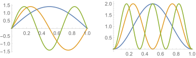
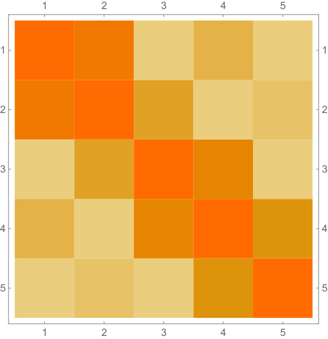
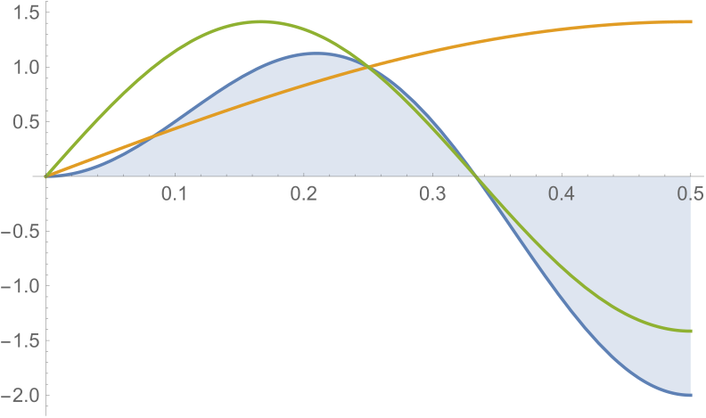
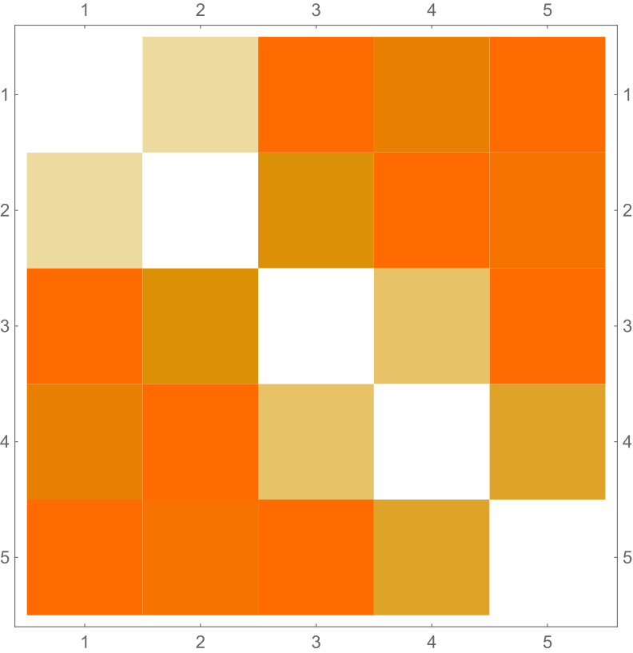
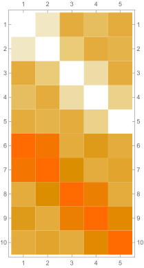
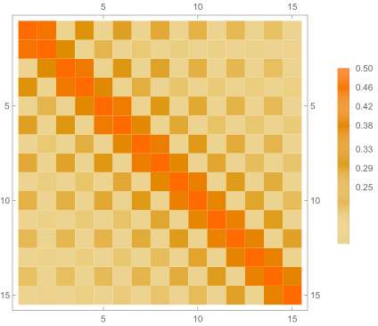

Knowing the basics of wave mechanics, we can construct more elaborate systems as we increase the number of particles. It turns out that we can develop configurations such that they are symmetric or antisymmetric. These strongly affect the final probabilities of finding both particles between a given region in our potential. Results show that symmetric systems "pull" particles closer while antisymmetric systems "push" them away.
Recall that the solutions for the particle in a box potential are of the form:
\[\psi _n(x)=\sqrt{\frac{2}{L}}\sin \left( \frac{n\pi }{L}x \right) \tag{for $0 < x < L$}\] Fig. 1: First three eigenfunctions for the 1D particle in a box.
Left: Probability amplitudes $\psi _n(x)$. Right: probability densities $|\psi _n(x)|^2$.
With that in mind, let's start building some entangled states.
Suppose we have a system of the form
\[\Psi _n(x_1 ,x_2 ) =\psi _n(x_1 )\psi _n(x_2)\]That is, we have an entangled, single-term, symmetric system where both particles are said to have the same energy. Here, $x_1 $ refers to the $x$-position of the first particle and $x_2$ to that of the second. Explicitly, some examples are:
\begin{align*} \Psi _1(x_1 ,x_2 ) &= \frac{2}{L}\sin \left( \frac{\pi }{L}x_1 \right)\sin \left( \frac{\pi }{L}x_2 \right) \\ \Psi _2(x_1 ,x_2 ) &= \frac{2}{L}\sin \left( \frac{2\pi }{L}x_1 \right)\sin \left( \frac{2\pi }{L}x_2 \right) \\ \Psi _3(x_1 ,x_2 ) &= \frac{2}{L}\sin \left( \frac{3\pi }{L}x_1 \right)\sin \left( \frac{3\pi }{L}x_2 \right) \\ &{\;}\;\;\;\; \text{etc.} \end{align*}Suppose we want the probability of finding both particles in the first half of the box (i.e., between $0 < x < L/2$). It turns out that it is always:
\[P=\frac{1}{4}\] Which makes sense, because when we take the integrals: \begin{align*} P &= \int_{0}^{L/2}\int_{0}^{L/2} \frac{2}{L}\sin \left( \frac{n\pi }{L}x_1 \right)\sin \left( \frac{n\pi }{L}x_2 \right)\frac{2}{L}\sin \left( \frac{n\pi }{L}x_1 \right)\sin \left( \frac{n\pi }{L}x_2 \right)dx_1 dx_2 \\ &= \frac{4}{L^2 }\cdot \left[ \int_{0}^{L/2} \sin ^2\left( \frac{n\pi }{L}x_1 \right) dx_1 \right] \cdot \left[ \int_{0}^{L/2} \sin ^2\left( \frac{n\pi }{L}x_2 \right) dx_2 \right] \\ &= \frac{4}{L^2 } \left[ \frac{L}{4} \right] \left[ \frac{L}{4} \right] \\ &= \frac{1}{4} \end{align*}It's as simple as "the probability of one is $1/2$, the probability of the other one is also $1/2$, then together we have $1/4$."
This case indeed has no unique properties, but it is precisely this that will come in handy when thinking about what's happening when we have more than one term in our quantum state.
Mathematically, the critical part of this example was that the product in the integrand was between monomials (and thus, we were able to split the integral quickly), as we shall later say: There were no "interference" cross terms. Individual probabilities won't be enough to multiply to the total/net probability...
Let's now consider symmetric, entangled systems with two terms. That is, systems of the form
\[\Psi _{m,n}^{(s)}(x_1 ,x_2 )=\frac{1}{\sqrt{2}}\psi _m(x_1 )\psi _n(x_2 )+\frac{1}{\sqrt{2}}\psi _n(x_1 )\psi _m(x_2 )\]Here, the probability of finding both particles on the left side of the 1D box is given by:
\begin{align*} P_{m,n} &= \int_{0}^{L/2} \int_{0}^{L/2} |\Psi _{m,n}^{(s)}|^2 dx_1 dx_2 \\ &= \int_{0}^{L/2} \int_{0}^{L/2} \frac{\psi _m^2 (x_1 )\psi _n^2 (x_2 )}{2}+\frac{\psi _n^2 (x_1 )\psi _m^2 (x_2 )}{2}+\psi _m(x_1 )\psi _n(x_1)\psi _m(x_2 )\psi _n(x_2)\;dx_1 dx_2 \end{align*}Where the integral of the first two terms always goes to $1/4$, no matter what $n$ or $m$ are. Thus, consider:
\[P_{m,n}=\frac{1}{4}+\int_{0}^{L/2} \int_{0}^{L/2} \psi _m(x_1 )\psi _n(x_1)\psi _m(x_2 )\psi _n(x_2)\;dx_1 dx_2\]We can conclude that the probability of finding both particles in a symmetric entangled state is always larger than or equal to $1/4$. Of course, a thoughtful selection of $m$ and $n$ will move us closer to (or directly to) $1/4$, and also push us higher into more probability.
The probabilities for the $n,m=1,2,3,4,5$ cases follow:
\[ \begin{array}{ccccc} \frac{1}{2} & \frac{1}{4}+\frac{16}{9 \pi ^2} & \frac{1}{4} & \frac{1}{4}+\frac{64}{225 \pi ^2} & \frac{1}{4} \\ \frac{1}{4}+\frac{16}{9 \pi ^2} & \frac{1}{2} & \frac{1}{4}+\frac{16}{25 \pi ^2} & \frac{1}{4} & \frac{1}{4}+\frac{16}{441 \pi ^2} \\ \frac{1}{4} & \frac{1}{4}+\frac{16}{25 \pi ^2} & \frac{1}{2} & \frac{1}{4}+\frac{64}{49 \pi ^2} & \frac{1}{4} \\ \frac{1}{4}+\frac{64}{225 \pi ^2} & \frac{1}{4} & \frac{1}{4}+\frac{64}{49 \pi ^2} & \frac{1}{2} & \frac{1}{4}+\frac{64}{81 \pi ^2} \\ \frac{1}{4} & \frac{1}{4}+\frac{16}{441 \pi ^2} & \frac{1}{4} & \frac{1}{4}+\frac{64}{81 \pi ^2} & \frac{1}{2} \\ \end{array} \]Where, as expected, we have $P=1/2$ for all the entries in the diaginal (i.e., $m=n$). Also, notice the symmetric nature of the "matrix," something that's also not surprising. A better way to visualize these results follows in the form of numerical values:
\[ \begin{array}{ccccc} 0.5 & 0.430127 & 0.25 & 0.27882 & 0.25 \\ 0.430127 & 0.5 & 0.314846 & 0.25 & 0.253676 \\ 0.25 & 0.314846 & 0.5 & 0.382338 & 0.25 \\ 0.27882 & 0.25 & 0.382338 & 0.5 & 0.330056 \\ 0.25 & 0.253676 & 0.25 & 0.330056 & 0.5 \\ \end{array} \]And a matrix plot:
The $1/4$ case is a a bit counterintuitive at first, but they key point is that the integrals go to zero for specific combinations of $m$ and $n$. Consider, for example, the $m=1$ $n=3$ case:
The integral truly goes to zero. And this is because the solutions are orthogonal, but wait! We are not working in their whole orthogonal domain. Notice how the $m=1$ $n=2$ or $m=1$ $n=4$ are orthogonal on $ \left[ 0,L \right] $, but here we have non-zero integrals to add to $1/4$.
By only conisering half of the orthogonality domain, we must reconsider how solutions behave next to each other. Keep this in mind!
Such systems are almost the same to the last ones. Consider:
\[\Psi _{m,n}^{(a)}(x_1 ,x_2 )=\frac{1}{\sqrt{2}}\psi _m(x_1 )\psi _n(x_2 )-\frac{1}{\sqrt{2}}\psi _n(x_1 )\psi _m(x_2 )\]Notice that instead of a sum of states, we have a difference. By swapping $1\mapsto 2$ and $2\mapsto 1$, we will get a state equal to $-\Psi _{m,n}^{(a)}(x_1 ,x_2 )$. That is, a negative sign is induced and that's why we refer to it as an antisymmetric state.
Our previous discussion trasnaltes naturally to the antisymmetric scenario. The probability of finding both particles in an entangled antisymmetric state between the left side of a 1D box is given by:
\begin{align*} P_{m,n} &= \int_{0}^{L/2} \int_{0}^{L/2} |\Psi _{m,n}^{(s)}|^2 dx_1 dx_2 \\ &= \int_{0}^{L/2} \int_{0}^{L/2} \frac{\psi _m^2 (x_1 )\psi _n^2 (x_2 )}{2}+\frac{\psi _n^2 (x_1 )\psi _m^2 (x_2 )}{2}-\psi _m(x_1 )\psi _n(x_1)\psi _m(x_2 )\psi _n(x_2)\;dx_1 dx_2 \\ &= \frac{1}{4} -\int_{0}^{L/2} \int_{0}^{L/2}\psi _m(x_1 )\psi _n(x_1)\psi _m(x_2 )\psi _n(x_2)\;dx_1 dx_2 \end{align*}At this point, it is clear what's going to happen. Consider the probabilities for the $n,m=1,2,3,4,5$ cases:
\[\begin{array}{ccccc} 0 & \frac{1}{4}-\frac{16}{9 \pi ^2} & \frac{1}{4} & \frac{1}{4}-\frac{64}{225 \pi ^2} & \frac{1}{4} \\ \frac{1}{4}-\frac{16}{9 \pi ^2} & 0 & \frac{1}{4}-\frac{16}{25 \pi ^2} & \frac{1}{4} & \frac{1}{4}-\frac{16}{441 \pi ^2} \\ \frac{1}{4} & \frac{1}{4}-\frac{16}{25 \pi ^2} & 0 & \frac{1}{4}-\frac{64}{49 \pi ^2} & \frac{1}{4} \\ \frac{1}{4}-\frac{64}{225 \pi ^2} & \frac{1}{4} & \frac{1}{4}-\frac{64}{49 \pi ^2} & 0 & \frac{1}{4}-\frac{64}{81 \pi ^2} \\ \frac{1}{4} & \frac{1}{4}-\frac{16}{441 \pi ^2} & \frac{1}{4} & \frac{1}{4}-\frac{64}{81 \pi ^2} & 0 \\ \end{array}\]Or numerically
\[\begin{array}{ccccc} 0. & 0.0698735 & 0.25 & 0.22118 & 0.25 \\ 0.0698735 & 0. & 0.185154 & 0.25 & 0.246324 \\ 0.25 & 0.185154 & 0. & 0.117662 & 0.25 \\ 0.22118 & 0.25 & 0.117662 & 0. & 0.169944 \\ 0.25 & 0.246324 & 0.25 & 0.169944 & 0. \\ \end{array}\]Not only are we getting values below $1/4$, we are also getting probabilities going to $0$.
With a matrix plot, we see that:
Side to side, the resulting matrix plots look like:
Not surprisingly, adding the symmetric and antisymmetric probabilities always results in $1/2$. We can further expand those plots to notice other interesting behaviors in the system:
That's for all the cases for which $m,n$ run from $1$ to $15$, in a symmetric state (the antisymmetric version is the opposite).
The important result is that symmetric systems tend to "pull" particles together, while antisymmetric systems seem to "push" them away to the point that we can't ($P=0$) find them together in a given region.
These "interactions" are what Heisenberg called exchange forces, either of attraction or repulsion.
In later posts, we shall consider n-dimensional systems with more than two particles and see how the symmetric/antisymmetric versions compare. Furthermore, it would also be great to consider other potentials.